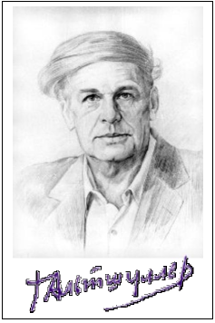
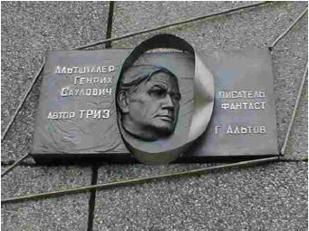

Phụ lục 1: GENRIKH SAULOVICH ALTSHULLER: TIỂU SỬ VÀ SỰ NGHIỆP

Thầy Genrikh Saulovich Altshuller sinh ngày 16.10.1926 tại Taskent, thủ đô nước Cộng hòa xô viết Uzbekistan thuộc Liên Xô trước đây. Sau đó gia đình Thầy chuyển sang sống ở Baku, thủ đô nước Cộng hòa xô viết Azerbaidgian. Năm 14 tuổi, khi còn là học sinh trung học, Thầy đã có trong tay vài Bằng chứng nhận tác giả sáng chế (patent). Từ năm 1946, Thầy đã nung nấu những ý định đầu tiên xây dựng một lý thuyết giúp bất kỳ người bình thường nào cũng có thể làm các sáng chế mà sau này Thầy đặt tên là “Lý thuyết giải các bài toán sáng chế” (TRIZ). Thầy có một thời gian phục vụ quân đội làm chuyên viên về patent thuộc hạm đội Caspian (Lý Hải). Thầy tốt nghiệp Đại học công nghiệp (sau đổi tên là Đại học dầu mỏ và hóa học). Thầy và người bạn của Thầy là ông R. Shapiro đã cùng nhau thực hiện nhiều sáng chế. Năm 1949, nhân tìm ra công thức một loại thuốc nổ cực mạnh, hai người viết thư thông báo trực tiếp cho lãnh tụ Stalin với mong muốn giúp quân đội xô-viết một phương tiện mạnh để chế tạo vũ khí và đồng thời đưa ra một số kiến nghị đối với hoạt động sáng tạo sáng chế ở Liên Xô. Do sự”hiểu lầm”, hai người bị vu cáo là có âm mưu đánh bom Hồng trường và bị xử tù 25 năm. Năm 1954, sau khi Stalin chết, hai ông được trả tự do và được khôi phục lại danh dự. Trở về Baku, Thầy Altshuller có một thời gian làm nhà báo, trong khi vẫn theo đuổi công việc nghiên cứu xây dựng TRIZ. Công trình đầu tiên về TRIZ Thầy và ông Shapiro công bố trên tạp chí “Các vấn đề tâm lý học” (số 6, năm 1956) có nhan đề “Về tâm lý học sáng tạo sáng chế”. Trong bài báo này, các tác giả lần đầu tiên đưa ra một cách tiếp cận mới mang tính cách mạng: Sáng tạo sáng chế làm thay đổi các hệ thống kỹ thuật mà các hệ thống này phát triển theo các quy luật khách quan nhất định, không phụ thuộc tùy tiện vào tâm lý chủ quan của các nhà sáng chế. Do vậy, chỉ có thể nâng cao năng suất và hiệu quả quá trình sáng tạo sáng chế, khi nhà sáng chế nắm vững các quy luật phát triển khách quan đó và biết điều khiển tâm lý chủ quan của mình theo chúng.
Sau này, ông R. Shapiro di cư sang Israel, chỉ còn mình Thầy Altshuller tiếp tục các công việc liên quan đến TRIZ. Năm 1968 Thầy Altshuller cộng tác với Hội đồng trung ương Hiệp hội toàn liên bang các nhà sáng chế và hợp lý hóa Liên Xô (VOIR) thành lập Phòng thí nghiệm các phương pháp sáng chế (OLMI), năm 1971 – Học viện công cộng về sáng tạo sáng chế (Public Institute of Inventive Creativity). Thầy trực tiếp giảng dạy hai khóa tại Trường nói trên: khóa 1971-1973 và 1973-1975. Sau đó, do bất đồng quan điểm và không chịu được sự quan liêu của các quan chức Hiệp hội, Thầy chấm dứt sự cộng tác với họ. Từ đó, Thầy chủ yếu truyền bá TRIZ thông qua các khóa do chính Thầy mở, do các nơi mời và qua các cuốn sách Thầy hoặc Thầy cùng các học trò viết. Đến những năm 80, hàng trăm thành phố ở Liên Xô đã có các Trường, Trung tâm, Câu lạc bộ hoặc nhóm giảng dạy TRIZ. Hiệp hội TRIZ (TRIZ Association) được thành lập năm 1989 và Tạp chí TRIZ (Journal of TRIZ) bằng tiếng Nga ra đời năm 1990. “Phong trào TRIZ” (TRIZ movement) hình thành và phát triển lúc đầu bên trong Liên Xô, sau đó lan ra các nước xã hội chủ nghĩa khác (TRIZ bắt đầu dạy ở Việt Nam từ năm 1977) và phương Tây.
Mỹ du nhập TRIZ từ năm 1991. Họ nhanh chóng nhận thấy đây là “Công nghệ mới mang tính cách mạng được đưa vào nước Mỹ” (TRIZ is a revolutionary new technology being introduced in the United States) và “tin rằng điều này sẽ làm tăng vị thế cạnh tranh của nước Mỹ trong nền kinh tế toàn cầu dựa trên kiến thức đang xuất hiện” (in the belief that it will enhance our country’s competitive position in the emerging knowledge - based global economy). Kết quả, chỉ chưa đầy 10 năm họ đi học TRIZ, lôi kéo các chuyên gia TRIZ của Liên Xô, dịch các sách TRIZ từ tiếng Nga sang tiếng Anh, tự xuất bản tạp chí TRIZ riêng (TRIZ - Journal) từ tháng 11 năm 1996, thành lập TRIZ Institute (ở California), Altshuller Institute (ở Massachussets), TRIZ University… Hiện nay khá nhiều các công ty nổi tiếng sử dụng TRIZ để giải quyết các vấn đề của mình như: 3M, General Motors, Ford, BMW, Mobil Oil, Amoco Oil, Kodak, Motorola, Procter & Gamble, Intel, Siemens, Texas Instruments, U.S. Air Force, NASA… TRIZ còn được đưa vào các trường đại học ở Mỹ như: Florida Atlantic University, Wayne State University, University of Michigan, University of Connecticut, Massachussets Institute of Technology (MIT), North Carolina State University, California Institute of Technology’s Industrial Relations Center,… Nhiều nước khác như Anh, Đức, Thụy Điển, Tây Ban Nha, Israel, Phần Lan, Hà Lan, Mexico, Úc, Pháp (du nhập TRIZ từ năm 1996), Nhật Bản (du nhập TRIZ từ năm 1997), Hàn Quốc cũng ngày càng quan tâm TRIZ nhiều hơn. Các bạn có điều kiện vào Internet, có thể sử dụng danh sách địa chỉ các trang web, được đăng trong phần này để có được nhiều thông tin hơn về TRIZ trên thế giới.
Từ năm 1986, mặc dù sức khỏe sút giảm rõ rệt, chưa kể đến năm 1991, tình hình trật tự, an ninh ở Baku (miền Nam Liên Xô) trở nên lộn xộn, Thầy và gia đình phải chuyển nhiều ngàn cây số lên ở thành phố Petrozavodsk thuộc nước Cộng hòa tự trị Karelia (miền Bắc Liên Xô). Thầy Altshuller vẫn tiếp tục làm việc. Thầy không chỉ phát triển tiếp TRIZ mà còn bước đầu đặt nền móng cho những lý thuyết rộng hơn: Lý thuyết tổng quát về tư duy mạnh (viết tắt theo tiếng Nga là OTSM) và Lý thuyết phát triển nhân cách sáng tạo (TRTL).
Thầy Altshuller còn là nhà văn viết truyện khoa học viễn tưởng với truyện đầu tiên đăng năm 1957. Nhiều đồng nghiệp của Thầy trong lĩnh vực này nhận định: các truyện khoa học viễn tưởng của Altshuller mang tính trí tuệ cao, đậm đặc các ý tưởng bất ngờ, nhiều ý tưởng vượt thời gian hàng chục có khi hàng trăm năm và có lẽ vì vậy không phải dễ đọc đối với những người chỉ muốn đọc để giải trí. Khi viết truyện khoa học viễn tưởng hoặc TRIZ cho thiếu niên, nhi đồng Thầy thường lấy bút hiệu là Altov.
Thầy Altshuller mất lúc 5g30 chiều (giờ địa phương) ngày 24.010.1998 tại Petrozavodsk, Liên bang Nga và được an táng tại Nghĩa trang danh dự của nước Cộng hòa Karelia lúc 2 giờ chiều ngày 29.010.1998. Di sản Thầy để lại là hàng trăm ngàn học trò (hiểu theo nghĩa rộng) trên khắp thế giới, hàng chục quyển sách, hàng trăm bài báo về TRIZ, OTSM, TRTL và hàng trăm truyện khoa học viễn tưởng. Thầy không chỉ là nhà sáng chế xuất sắc, nhà nghiên cứu mang tính cách mạng, đột phá một lĩnh vực lâu nay được coi là huyền bí (lĩnh vực sáng tạo), nhà văn viết truyện khoa học viễn tưởng với một phong cách độc đáo, người tổ chức và dẫn dắt “phong trào TRIZ” mà Thầy còn là một người sống giản dị, hết sức chu đáo, hào hiệp với những người khác, suốt đời theo đuổi mục đích giúp mỗi người trong nhân loại có những công cụ cần thiết để thực hiện một cách tốt nhất quyền mà tự nhiên trao cho mỗi người: quyền được sáng tạo. Các công cụ Thầy tìm ra và để lại cho mọi người không phải là ít: 40 thủ thuật (nguyên tắc) cơ bản và Bảng sử dụng chúng để khắc phục mâu thuẫn kỹ thuật, 76 chuẩn, 11 biến đổi mẫu để khắc phục mâu thuẫn vật lý, phương pháp mô hình hóa bài toán bằng những người tý hon (MBN)… và đặc biệt là ARIZ. Thầy mất đi để lại biết bao thương tiếc cho những người học Thầy, biết Thầy trực tiếp hoặc gián tiếp. Đến nay có nhiều người đề nghị lấy ngày 16.10 (ngày sinh của Thầy) làm Ngày của những người TRIZ, lấy tên Thầy đặt cho Hiệp hội TRIZ quốc tế (International TRIZ Association) và thành lập Bảo tàng Altshuller.

Bạn đọc muốn tìm hiểu thêm về Thầy Altshuller xin xem trang web sau: http://www.altshuller.ru của The Official G.S. Altshuller Foundation.
WHAT IS TRIZ?
TRIZ is Russian acronym meaning Theory of the Solution of Inventive Problems. Genrikh Altshuller and his colleagues studied over 2 millions patents and identified the body of principles and knowledge that define the process of solving extremely difficult (i.e., inventive) problems. International research is now enhancing and extending their findings.
TRIZ is a revolutionary new technology being introduced in the United States!
The Theory of Inventive Problem Solving (TRIZ) was first introduced to the United States in 1991.
WHAT DOES TRIZ DO FOR BUSINESS?
It has become even more difficult to conceive, develop and field breakthrough products and services consistently in today’s global marketplace. The pace of competition, the increasing demands of customers, and the explosion of knowledge and technology all contribute to the need for innovative approaches. The conceptual activity has to be faster than ever before, at a higher level of design maturity, and within constrained budgets. Current research shows that TRIZ accelerated idea generation for products, for services, and for quality improvement by factors ranging from 70% to 300%
IS TRIZ PRACTICAL? These practical organizations are now using TRIZ:
| • Jet Propulsion Laboratories | • BMW |
| • Ingersoll-Rand | • Kodak |
| • General Dynamics | • TRW |
| • Volvo-GM Heavy Trucks | • Mc Donnell Douglas |
| • EDS | • Allied Signal |
| • 3M | • Motorola |
| • Mobil Oil | • Procter & Gamble |
| • Amoco Oil | • U.S. Air Force |
| • Ford | • U.S. ARDEC |
| • General Motors | • U.S.P.S |
| • BioFutures | • Siemens |
| • United Technologies | • Intel |
| • Delcor Interactives | • Texas Instruments |